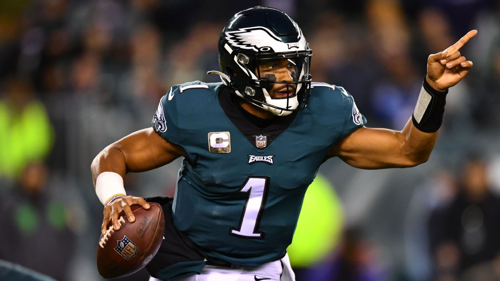
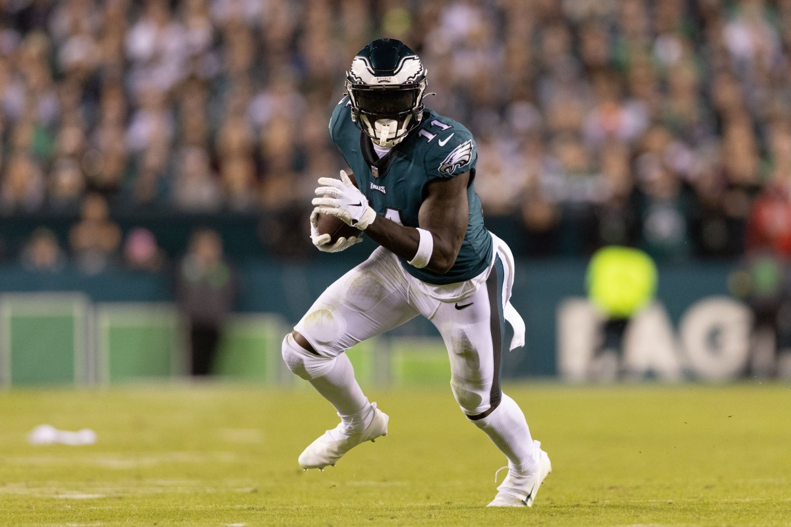
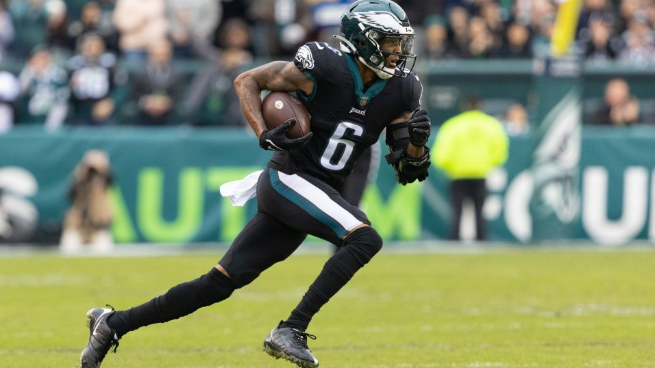
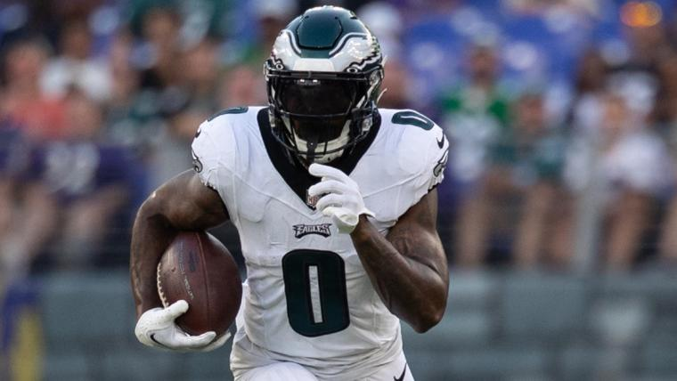
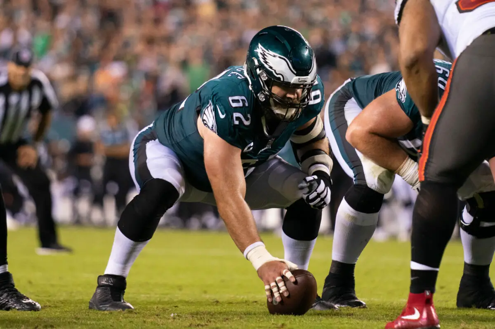

The Eagles rooster boasts some impressive names, especially on offensive, who most recently came together for a super bowl run in 2022. A top tier quarterback, a great wide reciver, and a historic center are just a few players on the current Eagles. Here we will dive into the top players on the 2023 Eagles, and their likelyness to return.
Born in Houston, Texas on August 7, 1998, Jalen Alexander Hurts was destined for greatness. His dad was a football coach at the high school Jalen would eventually play at, and he got into power lifting. In 2015 he went to the University of Alabama where he would win the Colledge Football Playoff National Championship, which he would eventually followed up with a master's degree at the University of Oaklahoma in 2023. Before that, he was drafted by the Eagles in 2020, though he wasn't immediatly the starter. After a game against the Green Bay Packers, however, this changed, and since then he has been the starting quarterback for the Eagles.

After Hurts signed a five year contract extension last season, he doesn't seem to be going anywhere. Right now, the biggest thing is proving that his performance in 2023 was a bad year, and that 2022 is the standard, not that he performed terribly, but it was a downgrade.
On June 30th, 1997, in Starkville, Mississippi, the world was introduced to Arthur Juan Brown, or A. J. Brown. He woud go on to attend Starkville High School where he would play both baseball and football. He became the second person to ever play in both Under Armour's All-America Football and Baseball games. This success led him to commit to the University of Mississippi for both baseball and football. He would be drafted by the San Diego Padres in 2016, which stopped him from playing baseball for the rest of him college career. As a result he focused on football where he would end up finding massive success, setting many records for his school and the SEC. He ended up skipping his senior year and going straight to the 2019 NFL Draft. He was picked in the second round by the Tennessee Titans, where he would find immediate success, helping take the team to the AFC Championship. He would go on to have more moderate success with the Titans until he was traded to the Eagles during the 2022 Draft for a first and a third round pick. Since then he has been a starting wide reciever for the Eagles.

While there were some rumors that Brown might be traded or leave the Eagles in some way, he recently shut down these rumors, stating, "I love where I'm at, it's simple as that, next question." This suggests that he will remain with the Eagles for at least a little longer.
Intrestingly enough, DeVonta Smith happens to share the same birthday with the author of this webpage: November 14. Smith however, was born 10 years earlier in 1998. Born in Amite City, Louisiana, Smith would go on to attend Amite High Magnet School, where he would play basketball and football. After playing well in high school, he committed to the University of Alabama, where he would boom. He helped them win the College Football Playoff National Championship twice, with the game winning catch in one and an impressive three touchdowns and 215 recieving yards in the other. He would also win numerous awards, including the SEC Offensive Player of the Year. In the 2021 NFL Draft, he was taken by the Eagles tenth overall. He has helped lead them to three straight playoff appearances, including a Super Bowl appearance.

While Smith's contract extends through the 2024 season, so he will definitely be on the Eagles for that time, after that there are a few different options. He could get his fifth year on his contract, if the Eagles want, extending his time on the Eagles for at least one more season. He could also get a contract extension. Either way, he will be playing for the Eagles in 2024.
On January 14, 1999, D'Andre Swift was born in Philadelphia, Pennsylvania, the city he would end up playing for. He first attended St. Joseph's Preparatory School, and then committed to the University of Georgia for football. While in his freshman year he was only the third string running back, he would share the first spot during his sophomore year. After only playing three years of football at Georgia, he declared for the 2020 NFL Draft. He was drafted in the second round by the Detroit Lions, and after okay statistics in three years with them, he was traded to the Eagles in the 2023 NFL Draft for a 2025 fourth round pick and swapped 2023 seventh-round picks. His first season with the Eagles held massive success that cumulated to a Pro Bowl appearance.

Though he had a productive and successful 2023 season, Swift does head into free agency this year. While the Eagles could resign him, they haven't confirmed anything yet. While this author would love to see him back, the Eagles let one Pro Bowler leave in 2022 (Miles Sanders), and they could easily do the same with Swift.
It's hard to quantify the impact that Jason has had on the Eagles. He was with them during thier miracle Super Bowl win and Super Bowl apperance in 2023. He is a strong leader in the locker room and also one of the best centers to ever play the position. Born on November 5, 1987, in Cleveland Heights, Ohio, Jason Daniel Kelce was destined for greatness. A few years later he would get a younger brother: Travis. He would attend Cleveland Heights High School before going to the University of Cincinnati where he was a walk-on running back, before switching to the offensive line. In 2008, his brother Travis joined him on the team. In his senior year he was moved to center from left guard. After putting up impressive Combine numbers, Jason was drafted in the sixth round of the 2011 NFL Draft. He would become the first rookie to start all 16 games as the center. In 2013 he was voted the best center in the NFL by Pro Football Focus in the Eagles playoff run. In 2014 he was selected for the Pro Bowl. His next amazing season would come in 2017 as he was selected first-team All-Pro in the Eagles Super Bowl run, where they ended up beating the Patriots for their first Super Bowl win, despite their star Quarterback being injured. In 2018 he followed this up by being selected first-team All-Pro again. In 2019 Kelce would do this again. In 2020 Kelce was selected to the Pro Bowl for the fourth time. In 2022 Kelce was selected for first-team All-Pro again. That season he would face off againt his brother in the Super Bowl, though Jaosn and the Eagles would unfortunately lose that game.

For two years Jason has considered retirement, eventually taking one year deals with the Eagles. After thier wild card loss, there were a lot of rumors that Kelce was going to call it quits. However, he hasn't confirmed if he will be returning for another, presumably last, season. While he said he was going to retire to his teamates after the loss, two days later he switched up saying he wasn't decided. Right now it's hard to tell, but there's no doubt that all Eagles fans would love to see him back for one more season.